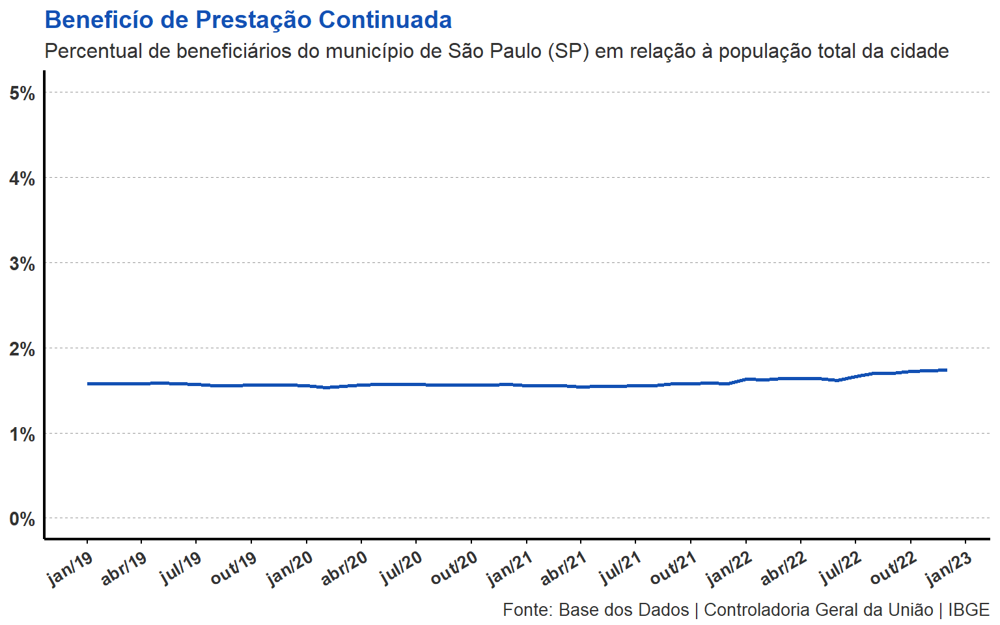

library(basedosdados)
library(tidyverse)
basedosdados::set_billing_id("your-project-id")
df <- read_sql(
'SELECT
bpc.id_municipio, mes_competencia, ano_competencia,
COUNT(DISTINCT nis_favorecido) AS qtde_beneficiarios,
pop.populacao
FROM `basedosdados.br_cgu_beneficios_cidadao.bpc` AS bpc
JOIN `basedosdados.br_ibge_populacao.municipio` AS pop
ON bpc.id_municipio = pop.id_municipio
AND bpc.ano_competencia = pop.ano
WHERE bpc.id_municipio = "3550308"
GROUP BY
bpc.id_municipio, ano_competencia, mes_competencia, pop.populacao'
)Beneficío de Prestação Continuada (BPC)
Visualização gráfica do percentual de beneficiários do BPC em São Paulo em relação à população total da cidade
Introdução
Esta é uma simples análise gráfica do percentual de beneficiários do Benefício de Prestação Continuada (BPC) no município de São Paulo (SP), ao longo dos anos de 2019 e 2023. Os dados utilizados foram obtidos do datalake da Base dos Dados (BD), disponível na Big Query do Google, que, por sua vez, foram extraídos diretamente da Controladoria Geral da União (CGU).
Importação dos dados
O código abaixo faz a importação dos dados com a função {read_sql}, que permite usar a sintaxe do SQL para transformar a base no formato que desejamos. Para mais detalhes sobre como importar os datasets da Base dos Dados para o R, acesse o tutorial produzido pela prória BD neste link.
Em suma, as transformações que fizemos consistem em:
Selecionar as colunas de interesse
Juntar os dados da CGU com os dados sobre a população total de São Paulo (SP)
Criar uma coluna com a quantidade de beneficiários agrupado por:
- Município, ano e mês
Transformação da base
Com a base já transformada, criamos uma coluna em R com o percentual de beneficiários do BPC em São Paulo relação à população total da cidade. Além disso, também criamos uma coluna em formato date com as informações de ano e mês.
dados <- df |>
mutate(
perc = qtde_beneficiarios / populacao,
data = as.Date(paste(ano_competencia, mes_competencia, "01", sep = "-"))
)Gerando o gráfico
O código abaixo gera a visualização gráfica da tabela acima.
dados |>
ggplot() +
aes(x = data, y = perc) +
geom_line(colour = "#1351B4", size = 1) +
theme_classic() +
# ggrepel::geom_label_repel(
# aes(label = qtde_beneficiarios),
# max.overlaps = 1,
# fill = "#1351B4",
# colour = "grey100"
# ) +
scale_x_date(
date_labels = "%b/%y",
date_breaks = "3 months"
) +
scale_y_continuous(labels = scales::percent,
limits = c(0, .05),
breaks = seq(0, .05, by = 0.01)) +
labs(
title = "Beneficío de Prestação Continuada",
subtitle = "Percentual de beneficiários do município de São Paulo (SP) em relação à população total da cidade",
caption = "Fonte: Base dos Dados | Controladoria Geral da União | IBGE"
) +
theme(
plot.title = element_text(
colour = "#1351B4",
face = "bold",
size = 14
),
plot.subtitle = element_text(
colour = "grey20",
size = 12
),
plot.caption = element_text(
colour = "grey20",
size = 10,
vjust = 0.01
),
axis.text = element_text(colour = "grey20", face = "bold"),
axis.text.x = element_text(size = 10, angle = 30, hjust = 1),
axis.text.y = element_text(size = 11),
panel.grid.major.y = element_line(
color = "grey60",
linetype = "dashed",
linewidth = .35
),
axis.title = element_blank(),
axis.ticks.x = element_line(colour = "black"),
axis.ticks.y = element_blank(),
axis.line.x = element_line(colour = "black", linewidth = .75),
axis.line.y = element_line(colour = "black", linewidth = .75),
panel.background = element_rect(
fill = "grey100"
),
plot.background = element_rect(
fill = "grey100"
)
) 